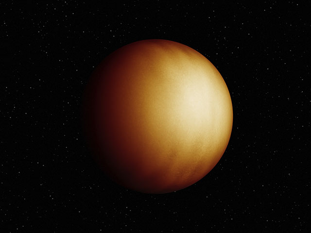

A gas giant is a large planet mostly composed of helium and/or hydrogen. These planets, like Jupiter and Saturn in our solar system, don’t have hard surfaces and instead have swirling gases above a solid core. Gas giant exoplanets can be much larger than Jupiter, and much closer to their stars than anything found in our solar system.
